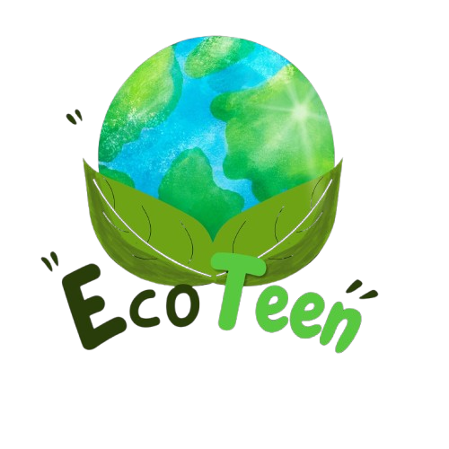

Logo EcoTeen melambangkan semangat generasi muda dalam menjaga kelestarian lingkungan. Melalui perpaduan bumi, daun, dan warna hijau serta biru, logo ini menggambarkan kepedulian terhadap alam dan harapan untuk masa depan yang lebih baik. EcoTeen mengajak remaja untuk memulai perubahan dari tindakan sederhana dalam kehidupan sehari-hari demi menciptakan lingkungan yang bersih, sehat, dan lestari.
Green and White Illustrative Nature Presentation oleh Hanifah Aqilah